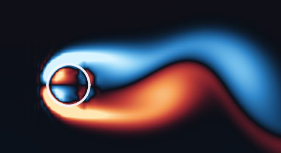
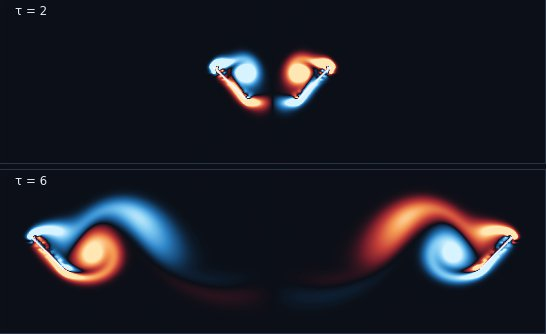
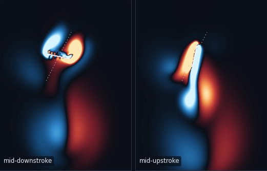
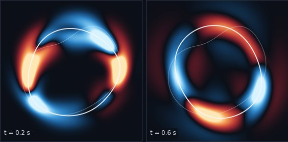

pyIBM
Python code for the immersed boundary method in two dimensions: flexible and moving structures in a viscous fluid, such as insect wings, flags, jellyfish bells, and heart tubes. It is written from the equations in the papers, and its input files follow IB2d.
The idea
Charles Peskin developed the immersed boundary method in the 1970s to study the flow around heart valves. The structure is a set of points joined by springs and beams, and the fluid lives on a fixed square grid. At every step the points push on the fluid around them, the fluid moves, and the points move with the fluid. The grid never has to follow the body, so wings that clap, bells that squeeze, and tubes that pinch are easy to set up.
pyIBM is that method in plain Python. Every module names the equations it implements, so you can read the code next to the papers. It grew out of my 2008 MATLAB code, and it still reproduces that code to round-off.
What it does now
- Two fluid solvers: a doubly periodic FFT solver with the first-order scheme of Peskin & McQueen (1996) and the second-order midpoint scheme of Peskin (2002), and a projection solver on a staggered grid after Seibold (2008), with walls, moving walls, inflow, outflow, and periodic sides.
- Two ways to join structure and fluid: discrete delta functions, and the blob projection method of Cortez & Minion (2000), which keeps the area inside a closed membrane.
- Structures: springs, damped springs, beams, target points for prescribed motion, and mass points that feel gravity.
- IB2d-style input files, so cases can move between the two codes, and hooks in plain Python for prescribed motion and boundary data.
- Output you can open in ParaView or VisIt, a history of the forces, and pictures of the vorticity.
- Only NumPy, SciPy, and Matplotlib, with tests for every example.
Examples
Each example runs with one command and has a README with the physics, the parameters, and the numbers to expect next to its reference. Some reproduce their reference closely, some only in part, and a few are demonstrations. Each one says which.

Flow past a cylinder
A ring of target points in a stream at Reynolds numbers 100 and 200, against Lai & Peskin (2000). The shedding frequency, drag, and lift come out 7 to 9 % above theirs. About half of that comes from our narrower box, and it is not yet a converged reproduction.
cylinder_wake
Clap and fling
Two wings fling apart at Reynolds numbers 8 and 128, the case of Miller & Peskin (2005). The force peaks and troughs fall within 0.03 of the stroke of where the paper has them. At Re 128 the peaks during rotation are 36 to 42 % high, because our wings start 4.3 grid cells apart instead of 10.
clap_and_fling
A flapping plate at Re 64
A rigid plate hovering with the tilted stroke of Jones et al. (2015), which makes vertical force with drag on the downstroke and lift on the upstroke. The mean vertical force coefficient is 1.05 with walls and 1.09 in a periodic box, against 1.02 ± 0.03 from the paper, interpolated to Re 64.
flapping_plate_re64
A ringing ellipse
A dented elastic ellipse pulls itself toward a circle and rings, the test of Cortez & Minion (2000). The fluid inside cannot be compressed, so the area should not change. With the blob projection it changes by a few parts in a million, inside the paper's range of ±1 part in 100,000. With the delta function it shrinks by 0.7 %.
blob_ellipseMatch a known answer
- The 2008 MATLAB code: heaving_plate_2008, the plate my old code pushed through syrup, matched to round-off.
- Exact solutions: the decaying Taylor–Green vortex (taylor_green), Stokes' oscillating wall (stokes_second_problem), and oscillating flow in a channel (womersley_channel).
- Published computations, closely: the lid-driven cavity of Ghia, Ghia & Shin (1982) (lid_driven_cavity), the flapping plate, and the ringing ellipse.
Agree in part
- The cylinder wake and clap and fling, above.
- A flag in a stream after Huang, Shin & Sung (2007): it flaps at their period to 1 %, but its amplitude has not converged (flapping_filament).
- A jellyfish bell after Hoover & Miller (2015): it rings at close to the paper's natural frequency (we tuned its stiffness to it), but it does not swim at this resolution (jellyfish_bell).
- Valveless pumping after Jung & Peskin (2001): the net flow goes the paper's way at all three pumping periods, with magnitudes within 40 % (heart_tube).
- The forced circle of Fovargue (2012): only the trend of the error with the time step, since the membrane model and stiffnesses are our own (forced_circle).
Demonstrations
- A swimming filament (swimmer), an elastic ring falling in a box (sedimenting_ring), and a rubber band relaxing to a circle (rubberband).
The table in docs/examples.md has every example with its reference, how well it agrees, and how long it takes to run.
Tutorials
Jupyter notebooks that take the equations of a source paper in order, name the pyIBM function behind each one, and run it. They are written for people who know some fluid mechanics and numerical methods, and each one runs in well under three minutes on a laptop.
Peskin & McQueen (1996), step by step
The periodic immersed boundary method and the midpoint scheme of Peskin (2002), ending with my 2008 heaving plate reproduced to round-off.
Open the notebookThe projection method on a staggered grid
The projection method after Seibold's notes, with walls, inflow, and outflow that change in time, and an immersed boundary in a channel.
Open the notebookThe blob projection method
The blob forces and projection of Cortez & Minion (2000), and how they compare with spreading forces by a delta function on one elastic ring.
Open the notebookWhere it came from
pyIBM started from my 2008 MATLAB code, which pushed a flat plate sideways through a very viscous fluid with the first-order periodic scheme in section 14 of Peskin & McQueen (1996). That code is kept unchanged in the repository, and pyIBM matches it to round-off.
From there we added the second-order midpoint scheme of Peskin (2002), a projection solver with walls after Seibold's notes for MIT 18.086 (2008), the blob projection method of Cortez & Minion (2000), and the forced-circle test from Lauren Fovargue's 2012 PhD thesis at UNC Chapel Hill. The input files follow IB2d (Battista, Strickland & Miller 2017).
Coming next
- Finer runs of the examples that agree only in part, starting with the cylinder wake, the flag, and the jellyfish bell.
- The blob projection method in a box with walls. Today it needs the periodic box.
pyIBM needs Python 3.11 or later, NumPy, SciPy, and Matplotlib. Clone the repository and run pip install -e . to install it. Developed by Laura A. Miller. MIT License.